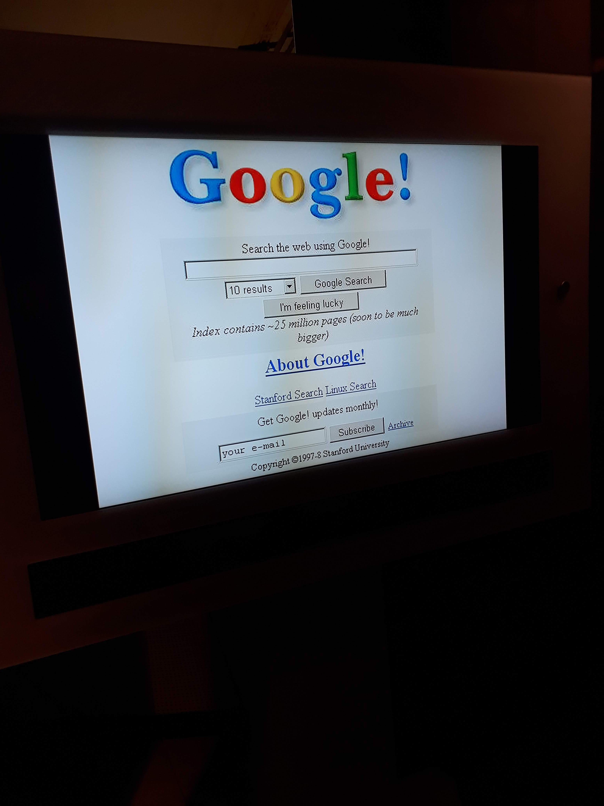

<!DOCTYPE HTML>
<!--
	Phantom by HTML5 UP
	html5up.net | @ajlkn
	Free for personal and commercial use under the CCA 3.0 license (html5up.net/license)
-->
<html>
	<head>
		<title>Python</title>
		<meta charset="utf-8" />
		<meta name="viewport" content="width=device-width, initial-scale=1, user-scalable=no" />
		<link rel="stylesheet" href="../../assets/css/main.css" />
		<noscript><link rel="stylesheet" href="../../assets/css/noscript.css" /></noscript>
		<style>
      .remocon {
  			position:fixed;
  			right: 7%;
  			top: 180px;
  			margin:0;
  			padding:0;
  		}
			h3, h4, h5, h6 {
				padding-top:40px;
				margin-bottom:10px;
			}
		</style>
	</head>
	<body class="is-preload">
		<!-- Wrapper -->
			<div id="wrapper">

				<!-- Header -->
					<header id="header">
						<div class="inner">

							<!-- Logo -->
								<a href="../../index.html" class="logo">
									<span class="symbol"></span><span class="title">hi-jin</span>
								</a>

							<!-- Nav -->
								<nav>
									<ul>
										<li><a href="#menu">Menu</a></li>
									</ul>
								</nav>

						</div>
					</header>

				<!-- Menu -->
					<script type='text/javascript' src='../../assets/js/menu3.js'></script>

				<!-- Main -->
					<div id="main">
						<div class="inner">
							<h1><a href='../index.html'>SiliconValley review</a></h1>
              <h2>0801</h2>
							<h3>실리콘밸리 기업 방문</h3>
							<p>
                <h4>Done.1 Adobe</h4>
                사람들이 흔히 Photoshop으로 잘 알고 있는 Adobe에 방문했다.<br>
								
                <br>
								<br>
								왼쪽은 Adobe에서 중요한 설명 등을 할 떄 이용되는 장소이고,<br>
                오른쪽은 사원들을 위한 Wellness Center이다.<br>
								
								<br>
                건강을 챙기기 위한 장소가 마련돼있다는 것도 놀라운 일이지만,<br>
                자신이 원하는 시간에 눈치보지 않고 이용한다는 사실이 더 놀라웠다.<br>
                <br>
                Adobe안에서 본 바깥 풍경의 모습이다.<br>
                사진으로만 봐도 날씨가 시원해서 돌아다니기 좋았던 기억이 난다.<br>
                

                <h4>Done.2 Google</h4>
                이번에는 출국 전부터 가장 기대했었던 Google에 방문했다.<br>
                매우 넓어서 인상깊었던 Google 사옥에는 나무들이 매우 많았고,<br>
                장소를 가리지 않고 이곳 저곳에서 자유롭게 일하고 있는 Googler들도 많았다.<br>
                
                <br>
                <br>
                Google을 돌아다니며 찍은 사진들이다.<br>
                Google의 대표 색인 빨강, 노랑, 초록, 파랑의 조화가 돋보였다.<br>
                
                
                <br>
                <br>
                무료로 제공받은 점심을 먹으며 한국 Googler분들께 궁금한 점을 질문하는 시간을 가졌다.<br>
                Google은 다양한 사람들로부터 다양하고 자유로운 아이디어를 얻으려고 한다고 하셨는데,<br>
                문득 Google campus의 다양한 색들이 Google의 다양성과 자유를 의미하는 것 같다는 생각이 들었다.<br>
                

                <h4>Done.3 Computer History Museum</h4>
                이름에서 느껴지는 것처럼, 컴퓨터의 역사에 관한 박물관인 Computer History Museum에 방문했다.<br>
                과거부터 현재까지 컴퓨터가 어떻게 바뀌어왔는지 볼 수 있었다.<br>
                
                <br>
                
                <br>
                <br>
                아래 사진은 세로 축에 적혀있는 소프트웨어를 개발하기 위해 몇 라인이나 필요한지 나타낸 사진이다.<br>
                <br>
                기본적으로 단위가 million으로 시작한다는게 놀라웠고,<br>
                저런 대규모 project를 할 때에는, 적절한 주석과 변수명 등이 필수적이겠다는 생각이 들었다.

                <h4>Done.4 Apple<del>의 기념품 매장</del></h4>
                노트북, 태블릿, 휴대폰, 이어폰, 시계 등 매우 많은 제품을 Apple 제품을 사용하기 때문에 Apple에도 방문하고 싶었는데<br>
                아쉽게도 Apple 내부는 들어가지 못했다.<br>
                기념품 매장에서 본 Apple의 모습이다. (나무 뒤로 보이는 건물)<br>
                <br>
                <br>
                그래도 아직 한국에 출시하지 않아서 사지 못했던 PowerBeats pro를 살 수 있었다.<br>
                
							</p>
							<h3>시내 관광</h3>
							<p>
								다양한 기업을 방문하고 나니 시간이 얼마 남지 않아서 개별로 시내 구경을 가진 못했고,<br>
                다함께 Golden Gate Bridge(금문교)에 갔다.
								<h4>Done.1 Golden Gate Bridge</h4>
                <div id='ggb_click'>
                <a onclick="open_ggb()">금문교 설명 보기</a>
                </div>
                <div id='ggb'>
                </div>
                <br>
                주변 풍경이 아름다웠고, 시원한 해풍이 불어서 기분이 좋았다.<br>
                
                <br>
                
              </p>
							<h3>느낀점</h3>
							<p>
								실리콘밸리에 위치한 모든 대기업들이 그런 것은 아니겠지만, 내가 느낀 그들의 공통점은 '자유'라고 생각한다.<br>
                자유로운 분위기 속에서 창의적이고 혁신적인 생각이 나온다는 것은 당연하고 자주 들었을 얘기지만,<br>
                이렇게 직접 실천하는 곳은 별로 없는 것 같다.<br>
                실천의 차이가 실리콘밸리 대기업을 최고로 만드는 것이라고 생각한다.
							</p>
						</div>
					</div>

				<!-- Footer -->

					<footer id="footer">
						<div class="inner">
							<section>
								<h2>Get in touch</h2>
								<form method="post" action="#">
									<div class="fields">
										<div class="field half">
											<input type="text" name="name" id="name" placeholder="Name" />
										</div>
										<div class="field half">
											<input type="email" name="email" id="email" placeholder="Email" />
										</div>
										<div class="field">
											<textarea name="message" id="message" placeholder="Message"></textarea>
										</div>
									</div>
									<ul class="actions">
										<li><input type="submit" value="Send" class="primary" /></li>
									</ul>
								</form>
							</section>
							<section>
								<h2>Follow</h2>
								<ul class="icons">
									<li><a href="https://www.facebook.com/profile.php?id=100008357586064" class="icon brands style2 fa-facebook-f"><span class="label">Facebook</span></a></li>
									<li><a href="https://github.com/hi-jin" class="icon brands style2 fa-github"><span class="label">GitHub</span></a></li>
									<li><a href="https://www.instagram.com/hi__jeans/" class="icon brands style2 fa-instagram"><span class="label">Instagram</span></a></li>
									<!--
									<li><a href="#" class="icon brands style2 fa-twitter"><span class="label">Twitter</span></a></li>
									<li><a href="#" class="icon brands style2 fa-dribbble"><span class="label">Dribbble</span></a></li>
									<li><a href="#" class="icon brands style2 fa-500px"><span class="label">500px</span></a></li>
									<li><a href="#" class="icon solid style2 fa-phone"><span class="label">Phone</span></a></li>
									<li><a href="#" class="icon solid style2 fa-envelope"><span class="label">Email</span></a></li>
									-->
								</ul>
							</section>
							<ul class="copyright">
								<li>&copy; Untitled. All rights reserved</li><li>Design: <a href="http://html5up.net">HTML5 UP</a></li>
							</ul>
						</div>
					</footer>

			</div>

		<!-- Scripts -->
      <script type='text/javascript' src='../js/remocon2.js'></script>
      <script>
        var ggb_opened = 0;
        var text;
        function open_ggb() {
          if (ggb_opened == 0) {
            click_text = '<a onclick="open_ggb()">금문교 설명 가리기</a>';
            text = "금문교는 현수교 발전사에 있어서 빼놓을 수가 없는 다리라고 한다.<br>이 긴 바다를 건너기 위해서는 현수교의 구조상 탑의 높이 역시 높아져야 했고,<br>이는 기존의 돌을 쌓아 만든 구조로는 힘들었다.<br>젠가처럼 '쌓는 구조'는 위아래의 힘은 잘 견디지만 옆에서의 힘은 견디기 힘들다.<br>결국 철로 된 튜브를 여러개를 수직으로 쌓아 만든 것이 금문교의 탑 구조물이다.";
            ggb_opened = 1;
          }else {
            click_text = '<a onclick="open_ggb()">금문교 설명 보기</a>';
            text = "";
            ggb_opened = 0;
          }
          document.getElementById("ggb").innerHTML = text;
          document.getElementById("ggb_click").innerHTML = click_text;
        }
      </script>
			<script src="../../assets/js/jquery.min.js"></script>
			<script src="../../assets/js/browser.min.js"></script>
			<script src="../../assets/js/breakpoints.min.js"></script>
			<script src="../../assets/js/util.js"></script>
			<script src="../../assets/js/main.js"></script>

	</body>
</html>
